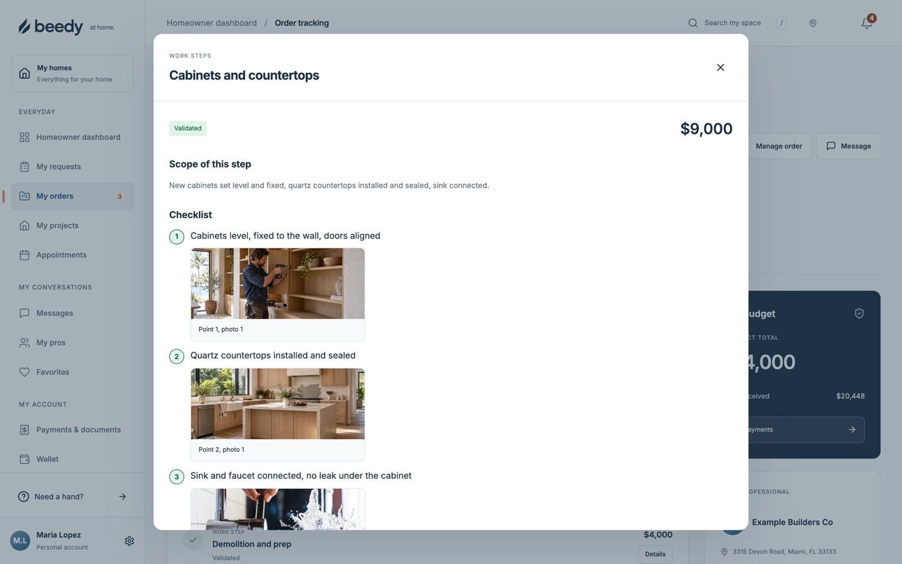

Case study 01 · Staged payment and step approval · Jun to Nov 2026
Paying step by step, on evidence
The product said "Pay step by step", but checkout charged the whole job up front. Now the client funds one step ahead and approves each step on a checklist with photos, and the company is paid at each approval. Live since November 2026.
- My role
- Founder. Product calls and design, terms reviewed with a Florida lawyer.
- Scope
- Checkout, step approval, payouts, lateness and penalties.
- Status
- Live. Last flags opened on November 18 to 20, 2026.


The problem
- The product said "Pay step by step", but checkout charged the whole job up front.
- "It's done" did not tell the client whether it was done well.
- A late or cancelled job cost the company nothing, and damage was settled with a free-text amount.
Constraints
- The card is saved at checkout and charged again for each step. Card fees repeat with every charge, so step payment applies only above a minimum job amount.
- Under Florida law a late penalty must be a reasonable estimate of the harm. The schedule is modest and capped: one free day, then 2% a day, up to 10%.
- A step can start only when the previous one is approved and the next one is funded.
How it evolved
- Companies propose work steps in their offer. The first step starts on its own when work starts, on the server.
- The real change. Checkout charges the diagnostic and step 1, and each approval funds the next step. The design went through a counter-review that raised 14 objections, then a second pass, and shipped in six pull requests.
- First rule: approving a step moves no money, and everything is paid out 14 days after the last step. I reversed it in November: each work step is paid out when it is approved, and only the final holdback waits 14 days. It opened in production once the terms were updated.
- A penalty schedule per step, for lateness and cancellation.
- Step verification: a checklist per step with one photo per point, an optional AI review of the photos against the step's requirements (both sides must consent), a frozen PDF report for both sides, and a rework path when the client has reservations. A run on the demo environment found five defects, fixed before opening.
- Lateness, second version. The old clock started when the company clicked "start", so a company that waited three weeks between steps was never late. The clock now starts when the step is ready. A company can ask for up to 3 more days once per step, and 48 hours of client silence counts as yes. The client can waive the penalty when approving.
What I ruled out
- One payout 14 days after the last step. Replaced by a payout at each approval.
- Starting the first step from the browser. It could race with the server and cost a second round trip.
- Bank transfers and wallets in the first version. Cards only, one automatic charge attempt per step.
Outcome
Live in production. Each approved step produces a PDF report sent to both parties, and a company never starts a step that is not funded. Too new for usage figures.
What I learned
Check what starts the clock. The first lateness rule counted from the company's own click on "start", so a company that waited three weeks between steps was never late. The clock now starts when the step is ready.